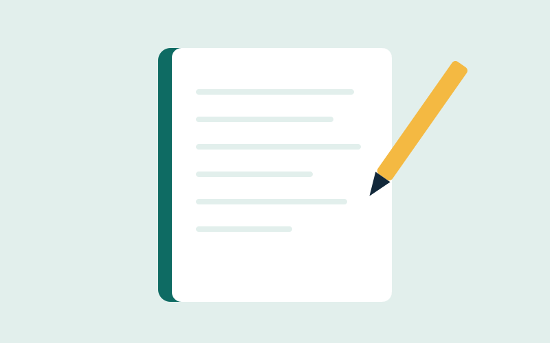
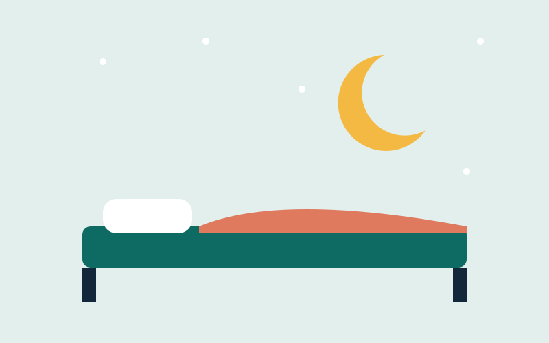
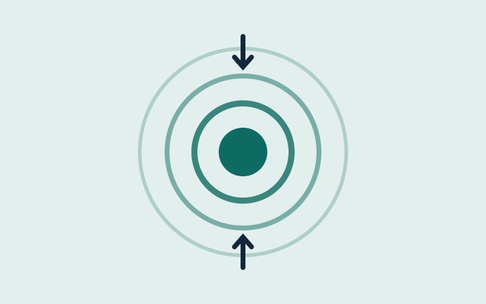

Breathe
Slow breathing signals your body to settle. Try 4 counts in, 4 hold, 4 out, 4 hold.
Watch box breathingRelease tension
Tighten, then relax, one body part at a time. Skip anything that hurts.
Watch the body resetWrite it down
Spend five minutes writing what happened, how you felt, and one small thing you can do next. You do not need to show anyone.

Protect your sleep
- Keep a regular sleep and wake time.
- Put screens away before bed if you can.
- If worries keep you awake, write them down and set them aside until tomorrow.

Move and connect
A short walk, stretching, or time with someone you trust can lift your mood. If your body has limits, choose movements that feel comfortable for you.
If coping skills are not enough, that is okay. Find support.

KalingaPH shares general information. It does not diagnose or replace care from a licensed professional.